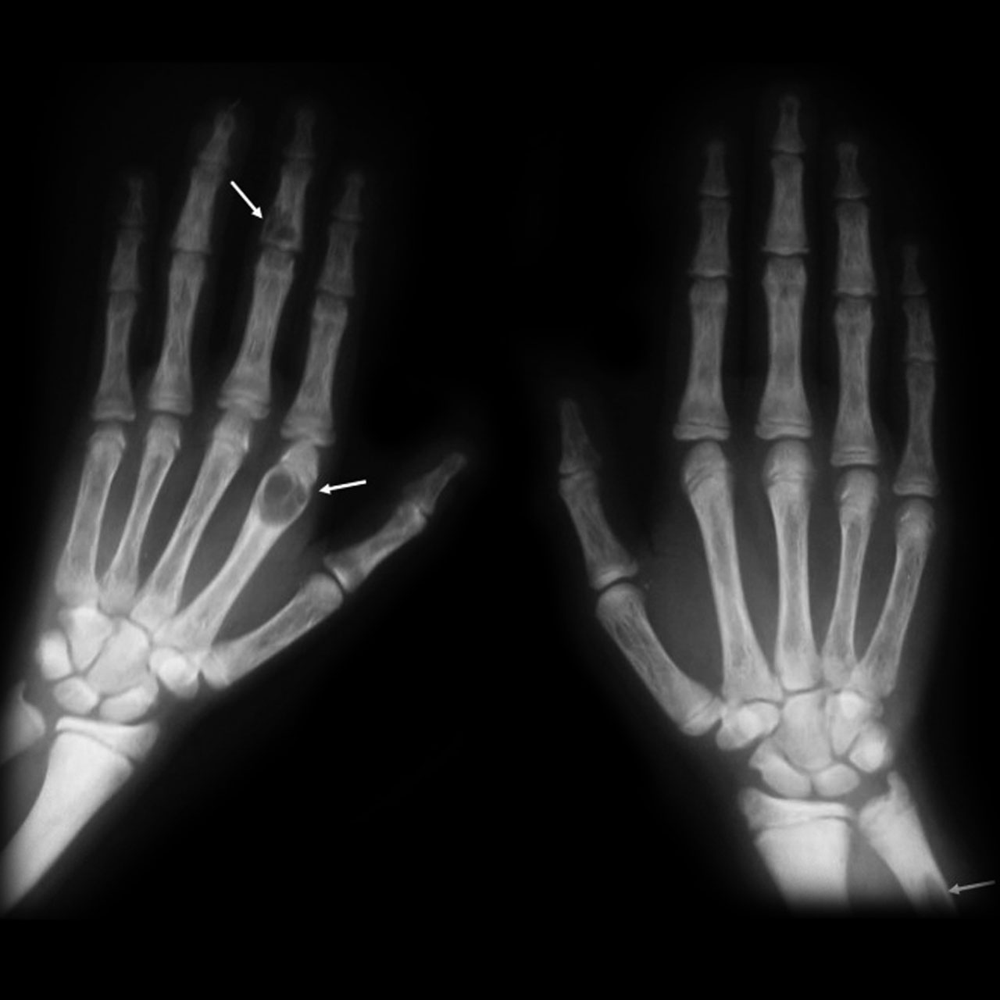

Ficha del catálogo
Manifestaciones óseas del hiperparatiroidismo
- Sistema
- Óseo
- Modalidad
- RX
- Región
- Manos y esqueleto axial
- Dificultad
- Avanzado
El exceso mantenido de hormona paratiroidea estimula la reabsorción ósea y deja huellas radiográficas muy características, sobre todo en las manos. Puede deberse a un adenoma paratiroideo o presentarse de forma secundaria en la enfermedad renal crónica. Aunque el diagnóstico se establece por analítica, las alteraciones esqueléticas siguen apareciendo como hallazgo en estudios pedidos por otros motivos. Reconocerlas permite orientar el estudio metabólico del paciente.
Técnica
Radiografía dorsopalmar de las manos con técnica de detalle, complementada con estudios del cráneo, la pelvis y la columna lateral según los hallazgos.
Qué observar
- Reabsorción subperióstica en el borde radial de las falanges medias
- Reabsorción de los penachos de las falanges distales
- Aspecto granular del cráneo por reabsorción trabecular difusa
- Bandas densas en los platillos vertebrales con centro más claro
- Lesiones líticas expansivas correspondientes a tumores pardos
- Calcificaciones de partes blandas y de las paredes arteriales
Hallazgos
Reabsorción subperióstica en las falanges, alteración difusa de la trama trabecular y, en casos avanzados, lesiones líticas y calcificaciones de partes blandas.
Perlas
La reabsorción subperióstica del borde radial de las falanges medias es el signo más específico y conviene buscarlo con imagen ampliada. Las bandas densas en los platillos vertebrales que dejan una franja central más clara son propias del hiperparatiroidismo secundario a enfermedad renal.
Diagnóstico diferencial
- Osteoporosis
- Adelgazamiento cortical uniforme sin reabsorción subperióstica.
- Enfermedad ósea de Paget
- Afectación focal con trabéculas gruesas y aumento del tamaño del hueso.
- Metástasis líticas
- Lesiones múltiples sin reabsorción subperióstica ni contexto metabólico.
Simuladores
- Artefactos de técnica blanda que simulan irregularidad cortical
- Cambios degenerativos de las falanges
- Acroosteólisis de otras causas
Por modalidad
- RX
- Método básico para reconocer los signos clásicos
- TC
- Útil para valorar tumores pardos y calcificaciones
- US
- Se emplea para localizar la glándula paratiroidea responsable
Protocolo
Radiografía de manos con técnica de detalle. Ampliación al cráneo, la pelvis y la columna cuando se busca confirmar una osteodistrofia establecida.
Clasificación
Se distingue el hiperparatiroidismo primario, por lesión de la propia glándula, del secundario, ligado a enfermedad renal crónica, con cambios óseos más floridos.
Errores frecuentes
- Confundir un tumor pardo con una lesión tumoral primaria
- No buscar la reabsorción subperióstica por examinar la mano con poco aumento
- Atribuir a osteoporosis simple una alteración trabecular de origen metabólico

hiperparatiroidismo reabsorcion subperiostica tumor pardo osteodistrofia renal metabolico manos calcificaciones